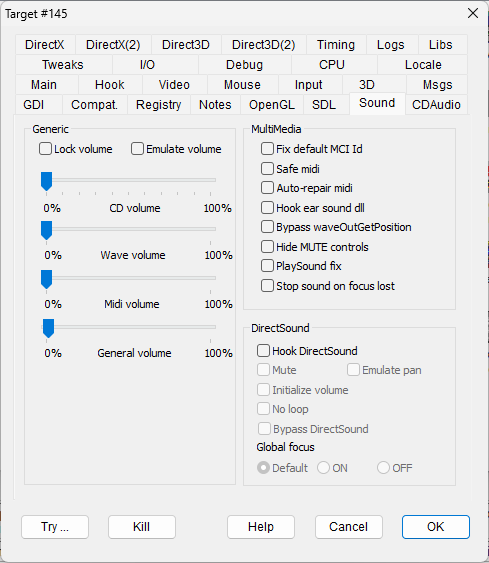

|
Lock volume |
LOCKVOLUME |
Prevents volume changes requested by the application. This holds for DirectSound SFX effects and since v2.04.59, also for the multimedia audio track volume changes requested through the WinMM library. |
|
Emulate volume |
EMULATEVOLUME |
In some cases, it is not possible to set a volume level by using the dedicated API or methods. In this case, it could be possible to emulate the volume control by updating the sound data directly. This is possible for MIDI messages that hold a volume level or for wave buffers by multiplying each sound value for a volume level. But this method can require hooking at a deeper level and, in the case of wave buffers, can be CPU intensive, so it should be used carefully. |
|
Fix default MCI Id |
FIXDEFAULTMCIID |
When opening or querying a MCI MIDI or a wave device, you can use the default ID -1. On Windows 95/98/ME, this field was a 16-bit WORD value equal to 0xFFFF, but since Windows XP, it became a 32-bit DWORD value equal to 0xFFFFFFFF, so the legacy 0xFFFF was no longer valid. The flag converts the legacy (WORD)-1 value to a valid (DWORD)-1 value. NOTE: This flag has the same effect of the Microsoft shim "CorrectSoundDeviceId". |
|
Safe midi |
SAFEMIDIOUT |
Some programs try to make fading MIDI sounds by quickly changing the MIDI sound volume programmatically. This operation, perhaps depending on the MIDI sound drivers, can be harmful and can lead the program to crash. This flag disables some potentially harmful MIDI operations like the change of volume and the sequence reset as a reasonable compromise between sound quality and robustness. |
|
Auto-repair midi |
MIDIAUTOREPAIR |
Performs some recovery actions when the MIDI calls fail. |
|
Hook ear sound dll |
HOOKEARSOUND |
It hooks "earpds.dll" or "earias.dll", depending on what gets referenced, to enable operation tracing and only useful for diagnostic purposes. |
|
Bypass waveOutGetPosition |
BYPASSWAVEOUTPOS |
Skips waveOutGetPosition calls that could cause the program to crash. Fixes "Rayman Eveil". |
|
Hide MUTE controls |
HIDEMUTECONTROLS |
Makes all the mixer controls of MUTE type invisible. This can prevent some programs from changing their volume level. |
|
PlaySound fix |
PLAYSOUNDFIX |
Some old Win32 programs play sound using some legacy resource that is no longer supported by the recent operating systems. Since the result of this operation can be interpreted as a generic failure of the sound system, this could mute the entire program. This flag suppresses the error code faking that the operation had success. |
|
Stop sound on focus lost |
STOPSOUND |
Typically, well designed Windows programs should stop activities and sound when they lose focus. Instead, several programs designed for exclusive full-screen video mode don't handle this feature properly and can keep playing sound even when minimized. This flag tries to stop sound, currently (in release 2.05.74) in two distinct ways: by pausing the CD audio emulator and the DirectSound primary buffer. |
|
Hook DirectSound |
HOOKDIRECTSOUND |
Hooks DirectSound to avoid hardware exclusive access, allowing debugging, tracing, and future expansions. All following flags in the DirectSound panel require this flag to be set. |
|
Mute |
SOUNDMUTE |
Option against buffers starting automatically without Play method - fixes the mute option with "Digging Jim". |
|
Emulate pan |
EMULATESOUNDPAN |
Emulates the DirectSound Pan capability accepting SetPan and GetPan methods without returning an error. |
|
Initialize volume |
DSINITVOLUME |
Initializes the sound volume for the application's mixer channel. Fixes the old games starting with zero volume as in "O.D.T. Escape ... or Die Trying" movies. The volume is initialized to the value defined with the "General volume" slider. |
|
No loop |
NOSOUNDLOOP |
Suppresses the DirectSound loop mode. It can be useful to limit the annoyance in programs that, because of some bug or technical problem, keeps repeating the same audio buffer endlessly. |
|
Bypass DirectSound |
BYPASSDSOUND |
Redirects all DirectSound invocations to a dummy, void and silent wrapper. This feature can be used whenever the required DirectSound features are not satisfied in the current configuration and the program can't run, for instance when the system is not provided with a sound device. Using this bypass you lose the sounds but the program doesn't get failures and can safely work. Since the sound initialization is made in the program early stage, early hook can be required. |
Global focus
|
Default |
No intervention. |
|
ON |
Forces sound buffers with GLOBALFOCUS capability to allow sound to also play when focus is lost. |
|
OFF |
Forces sound buffers without GLOBALFOCUS capability to stop sound from playing when focus is lost. |